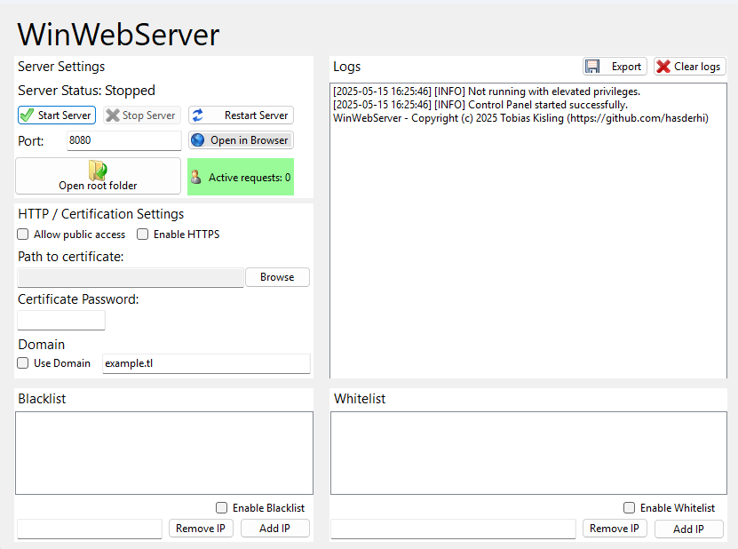

WinWebServer

An easy-to-setup webserver for Windows. Host static files easily on the local network or even online! Supports white/blacklisting, HTTPS and 404/403 pages.
Perfect if you need a development server, not quite the right choice to host things permanently.
Download
Home